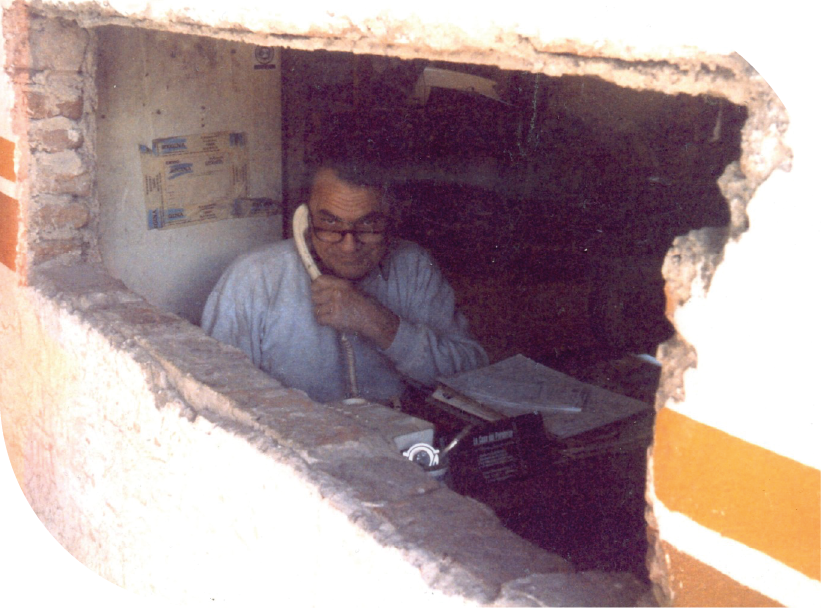
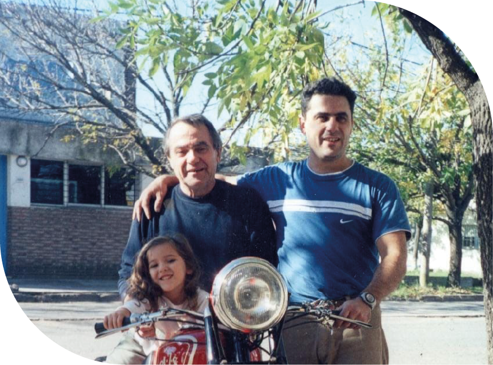

QUIENES SOMOS

En 1967, mi papá dio inicio a un sueño: abrió su primer taller de chapa y pintura en un espacio prestado. Años después, en 1974, instaló su propio taller en la calle Manuel de la Fuente, dentro del galpón de su casa, donde trabajó hasta 1982. Luego, el proyecto se trasladó a Alsina (1982–1992) y, finalmente, desde 1992 hasta hoy, tiene su hogar en el Boulevard Ugarte.

Esa historia de dedicación, precisión y amor por el oficio es el motor que hoy impulsa a Garage 70, una marca que busca actualizar la tradición familiar, fusionando la excelencia técnica con la innovación. Somos una nueva generación que respeta el pasado, pero acelera hacia el futuro: una experiencia integral de mantenimiento automotriz, donde cada detalle importa y cada cliente forma parte del recorrido.